This vignette provides an introduction to cregg, a package for analyzing and visualizing the results of conjoint experiments, which are factorial discrete choice experiments that are increasingly popular in the political and social sciences for studying decision making and preferences over multidimensional issues. cregg provides functionality that is useful for analyzing and otherwise examining data from these designs, namely:
amce()
mm()
cj_table() and cj_freqs() and cross-tabulation of feature restrictions using cj_props()
cj_tidy()
In addition, the package provides a number of tools that are likely useful to conjoint analysts:
plot() methods for all of the abovecj_tidy()
amce_by_reference()
To demonstrate package functionality, the package includes three example datasets:
taxes, a full randomized choice task conjoint experiment conducted by Ballard-Rosa et al. (2016)immigration, a partial factorial conjoint experiment with several restrictions between features conducted by Hainmueller, Hopkins, and Yamamoto (2014)conjoint_wide, a simulated “wide”-format conjoint dataset that is used to demonstrate functionality of cj_tidy()
The design of cregg follows a few key principles:
Y ~ A + B + C implies an unconstrained design, while Y ~ A * B + C implies a constraint between levels of features A and B. cregg figures out the constrained level pairs automatically without needing to further specify them explicitly.cregg also provides some sugar:
cj(..., by = ~ group) idiom) for repeated, subgroup operations without the need for lapply() or for loops%>%).The package, whose primary point of contact is cj(), takes its name from the surname of a famous White House Press Secretary.
Contributions and feedback are welcome on GitHub.
The package includes several example conjoint datasets, which are used here and in examples:
The package provides straightforward calculation and visualization of descriptive marginal means (MMs). These represent the mean outcome across all appearances of a particular conjoint feature level, averaging across all other features. In forced choice conjoint designs with two profiles per choice task, MMs by definition average 0.5 with values above 0.5 indicating features that increase profile favorability and values below 0.5 indicating features that decrease profile favorability. (They will average 0.33 in designs with three profiles, 0.25 with four profiles, etc.) For continuous/ordinal outcomes, MMs can take any value in the full range of the outcome. Calculation of MMs entail no modelling assumptions are simply descriptive quantities of interest:
# descriptive plotting
f1 <- ChosenImmigrant ~ Gender + LanguageSkills + PriorEntry + Education * Job + CountryOfOrigin * ReasonForApplication +
JobExperience + JobPlans
plot(mm(immigration, f1, id = ~CaseID), vline = 0.5)cregg functions use attr(data$feature, "label") to provide pretty printing of feature labels, so that variable names can be arbitrary. These can be overwritten using the feature_labels argument to override these settings within cregg functions. (To overwrite/create feature labels permanently, use for example attr(immigration$LanguageSkills, "label") <- "English Proficiency".) Feature levels are always deduced from the levels() of righthand-side variables in the model specification. All variables should be factors with levels in desired display order. Similarly, the plotted order of features is given by the order of terms in the RHS formula unless overridden by the order of variable names given in feature_order.
A more common analytic approach for conjoints is to estimate average marginal component effects (AMCEs) using some form of regression analysis. cregg uses glm() and svyglm() to perform estimation and margins to generate average marginal effect estimates. Designs can be specified with any interactions between conjoint features but only AMCEs are returned. Any terms that linked by a * in the formula are treated as design constraints and AMCEs are estimated cognizant of these constraints; only two-way interactions are supported, however. Just like for mm(), the output of cj() (or its alias, amce()) is a tidy data frame:
# estimation
amces <- cj(immigration, f1, id = ~CaseID)
head(amces[c("feature", "level", "estimate", "std.error")], 20L) feature level estimate std.error
1 Gender Female 0.000000000 NA
2 Gender Male -0.026023159 0.008012413
3 Language Skills Fluent English 0.000000000 NA
4 Language Skills Broken English -0.056319723 0.011312971
5 Language Skills Tried English but Unable -0.126359527 0.011370259
6 Language Skills Used Interpreter -0.159740917 0.011589128
7 Prior Entry Never 0.000000000 NA
8 Prior Entry Once as Tourist 0.055954954 0.012463168
9 Prior Entry Many Times as Tourist 0.054748425 0.012912603
10 Prior Entry Six Months with Family 0.075317887 0.012603718
11 Prior Entry Once w/o Authorization -0.110084275 0.013026767
12 Educational Attainment No Formal 0.000000000 NA
13 Educational Attainment 4th Grade 0.033068508 0.014906199
14 Educational Attainment 8th Grade 0.057744013 0.014945344
15 Educational Attainment High School 0.119483476 0.014963743
16 Educational Attainment Two-Year College 0.163405352 0.022955261
17 Educational Attainment College Degree 0.190036705 0.023015067
18 Educational Attainment Graduate Degree 0.176068029 0.016908355
19 Job Janitor 0.000000000 NA
20 Job Waiter -0.006814709 0.016605007This makes it very easy to modify, combine, print, etc. the resulting output. It also makes it easy to visualize using ggplot2. A convenience visualization function is provided:
# plotting of AMCEs
plot(amces)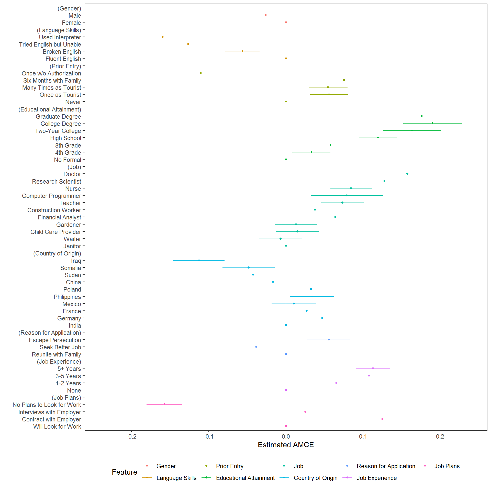
Reference categories for AMCEs are often arbitrary and can affect intuitions about results, so the package also provides a diagnostic tool for helping to decide on an appropriate reference category:
amce_diagnostic <- amce_by_reference(immigration, ChosenImmigrant ~ LanguageSkills, ~LanguageSkills, id = ~CaseID)
plot(amce_diagnostic, group = "BY", legend_title = "Reference Category")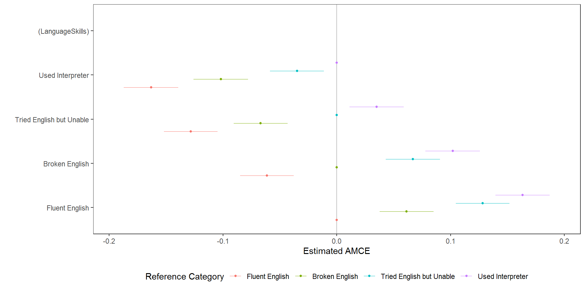
The reference category can be specified directly using relevel(data$feature, "New reference category"). This may result in levels not being plotted in the desired order, however, in which case the entire feature can be reordered and plotted with a new reference category:
# calculate marginal means and order output by estimate
country_mms <- mm(immigration, ChosenImmigrant ~ CountryOfOrigin, id = ~CaseID)
country_mms <- country_mms[order(country_mms$estimate), ]
# reorder feature in preference ascending order
immigration$CountryOfOrigin2 <- factor(immigration$CountryOfOrigin, levels = c("Iraq", "Somalia", "Sudan", "China", "India",
"Mexico", "France", "Poland", "Philippines", "Germany"))
country2_amces <- amce(immigration, ChosenImmigrant ~ CountryOfOrigin2, id = ~CaseID)
plot(country2_amces)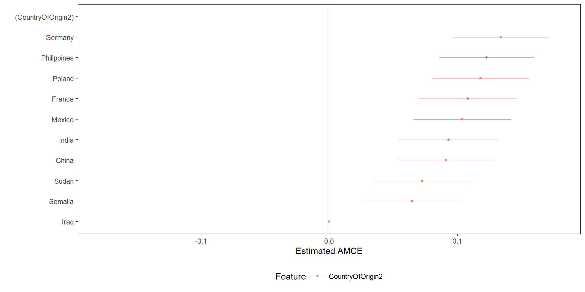
which is useful to generate easily interpretable plots in which otherwise unordered features are ordered according to preferences.
While the reference category has no meaningful bearing on estimation, it can affect inferences especially when subgroups are compared. For this reason, it can be useful to assess the substantive inferences from different reference categories alongside any subgroup analysis. To provide simple subgroup analyses, the cj() function provides a by argument to iterate over subsets of data and calculate AMCEs or MMs on each subgroup.
For example, we may want to ensure that there are no substantial variations in preferences within-respondents across multiple conjoint decision tasks:
mm_by <- cj(immigration, ChosenImmigrant ~ Gender + Education + LanguageSkills, id = ~CaseID, estimate = "mm", by = ~contest_no)
plot(mm_by, group = "BY", vline = 0.5)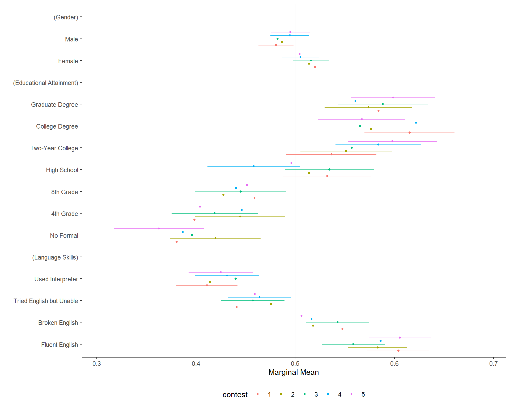
A more formal test of these differences is provided by a nested model comparison test:
cj_anova(immigration, ChosenImmigrant ~ Gender + Education + LanguageSkills, by = ~contest_no)Analysis of Deviance Table
Model 1: ChosenImmigrant ~ Gender + Education + LanguageSkills
Model 2: ChosenImmigrant ~ Gender + Education + LanguageSkills + contest_no +
Gender:contest_no + Education:contest_no + LanguageSkills:contest_no
Resid. Df Resid. Dev Df Deviance F Pr(>F)
1 13949 3353.0
2 13938 3349.6 11 3.3873 1.2814 0.2279which provides a test of whether any of the interactions between the by variable and feature levels differ from zero.
And, finally, while it is increasingly common to present grouped dot-and-whisker charts as comparisons of subgroup AMCEs, that comparison can be misleading of preferences differ substantially in the reference category. When that occurs, similar AMCEs do not necessarily mean similar preferences; this is a subtle distinction that must be respected when engaging in descriptive as opposed to causal interpretation of conjoint results.
For example, we might want to understand differences in preferences by ethnocentrism, which can most clearly be seen in a subgroup MM plot:
## the original plot is split at the value of 10, which is not a true median split
immigration$ethnosplit <- NA_real_
immigration$ethnosplit[immigration$ethnocentrism <= 10] <- 1L
immigration$ethnosplit[immigration$ethnocentrism > 10] <- 2L
immigration$ethnosplit <- factor(immigration$ethnosplit, 1:2, c("Low Ethnocentrism", "High Ethnocentrism"))
x <- cj(na.omit(immigration), f1, id = ~CaseID, estimate = "mm", by = ~ethnosplit)
plot(x, group = "ethnosplit", vline = 0.5)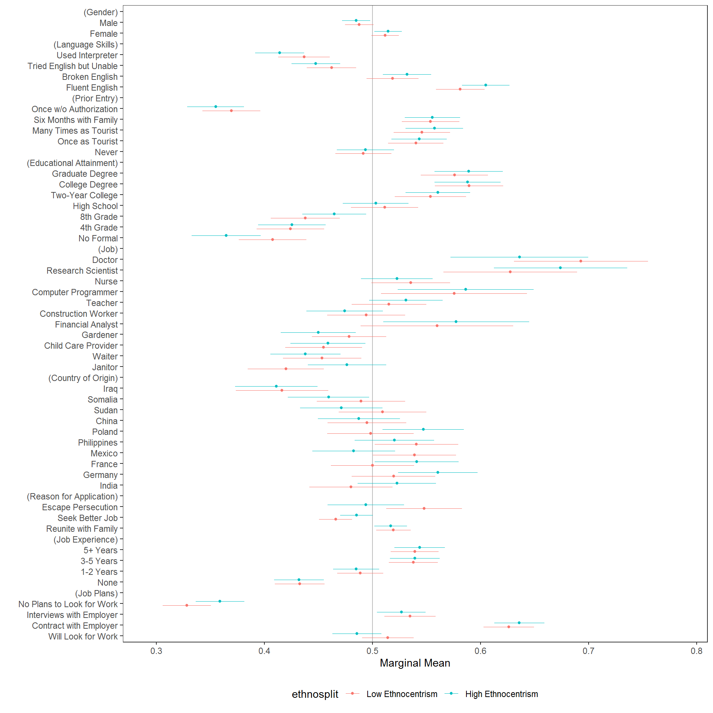
But if we want to interpret differences in the sizes of AMCEs (rather than descriptive differences in preferences), we might be inclined to design a similar visualization, replacing MMs with AMCEs. But in such cases, we cannot comment on the descriptive similarity in preferences across subgroups - only the heterogeneity in causal effects of feature variations. To make (dis)similarity explicit, such visualizations should include an explicit test of differences in effect sizes. Facetting works well:
# calculate conditional AMCEs
amces <- cj(na.omit(immigration), ChosenImmigrant ~ ReasonForApplication + LanguageSkills, id = ~CaseID, estimate = "amce",
by = ~ethnosplit)
diff_amces <- cj(na.omit(immigration), ChosenImmigrant ~ ReasonForApplication + LanguageSkills, id = ~CaseID, estimate = "amce_diff",
by = ~ethnosplit)
plot(rbind(amces, diff_amces)) + ggplot2::facet_wrap(~BY, ncol = 3L)But again, this plot showcases differences in conjoint effect sizes (AMCEs) not descriptive differences in underlying preferences. A plot of the differences in MMs might be clearer:
# calculate conditional MMs
mms <- cj(na.omit(immigration), ChosenImmigrant ~ ReasonForApplication + LanguageSkills, id = ~CaseID, estimate = "mm", by = ~ethnosplit)
diff_mms <- cj(na.omit(immigration), ChosenImmigrant ~ ReasonForApplication + LanguageSkills, id = ~CaseID, estimate = "mm_diff",
by = ~ethnosplit)
plot(rbind(mms, diff_mms)) + ggplot2::facet_wrap(~BY, ncol = 3L)And while the inferential differences may be small, the risk of using differences in conditional AMCEs versus differences in MMs is that both the size and even the direction of subgroup differences can be misleading when presented as differences in AMCEs:
diff_amces$Estimate <- "AMCE Difference"
diff_mms$Estimate <- "MM Difference"
plot(rbind(diff_amces, diff_mms), feature_headers = FALSE) + ggplot2::facet_wrap(~Estimate, ncol = 2L)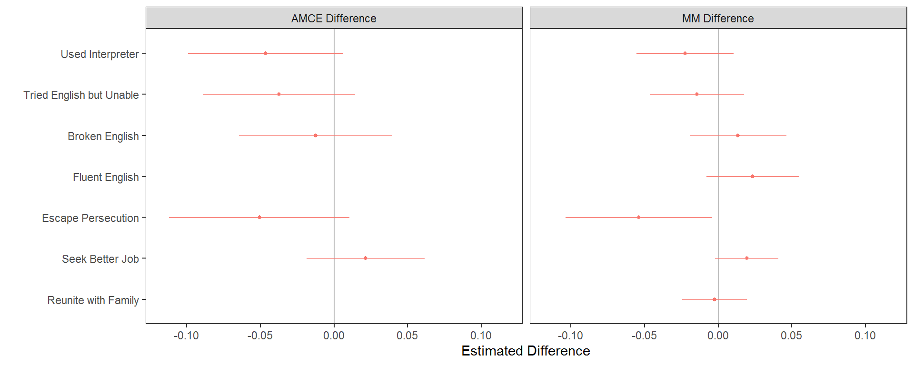
This general process is also possible with a profile feature, rather than a respondent characteristic, in the by = argument. This may be necessary when interaction effects are hypothesised. These tell us the causal effect of each level of the RHS features, depending on the value at which another attribute is held. For example, we could check for an interaction between the gender of immigrants and their language skills:
# calculate interaction AMCEs (ACIEs)
amces_2 <- cj(immigration, ChosenImmigrant ~ LanguageSkills, id = ~CaseID, estimate = "amce", by = ~Gender)
diff_amces_2 <- cj(immigration, ChosenImmigrant ~ LanguageSkills, id = ~CaseID, estimate = "amce_diff", by = ~Gender)
plot(rbind(amces_2, diff_amces_2)) + ggplot2::facet_wrap(~BY, ncol = 3L)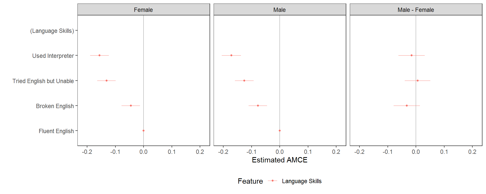
The explicit test of differences in effect sizes tells us that the change in probability of choosing a profile for each level of language skill, relative to the baseline level of fluent English, does not vary significantly contingent on the gender of the profile. For interactions between variables with more levels, however, these plots become large and complex, so it may be better to exclude the explicit tests of differences, which become difficult to interpret:
# calculate interaction AMCEs (ACIEs)
amces_2 <- cj(immigration, ChosenImmigrant ~ LanguageSkills, id = ~CaseID, estimate = "amce", by = ~Job)
plot(amces_2) + ggplot2::facet_wrap(~BY, ncol = 3L)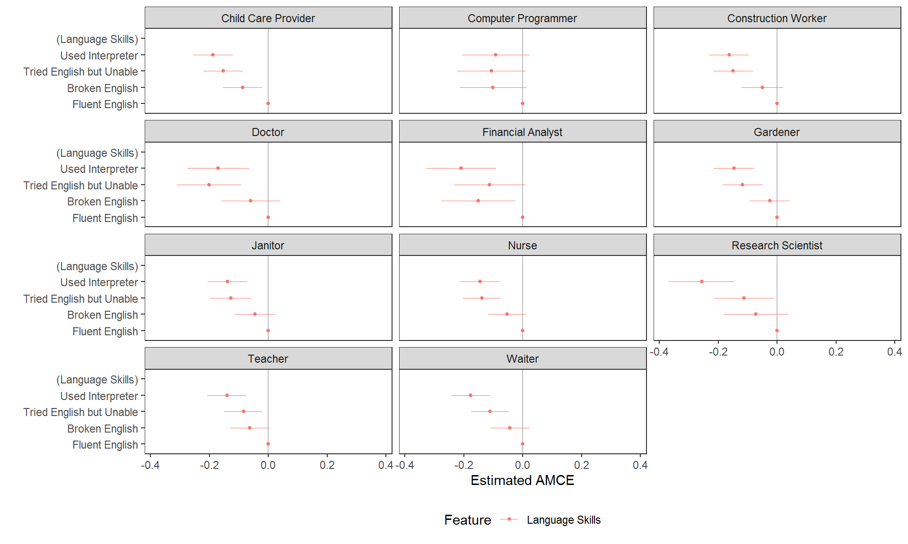
While this may be necessary when (causal) interaction effects specifically need to be tested, again inferential errors are very possible with this kind of visualisation of AMCEs. In many cases it may be preferable to report MMs. Here these tell us respondents’ language skill preferences contingent on the job of the profile:
# calculate interaction MMs
mms <- cj(immigration, ChosenImmigrant ~ LanguageSkills, id = ~CaseID, estimate = "mm", by = ~Job)
plot(mms, vline = 0.5) + ggplot2::facet_wrap(~BY, ncol = 3L)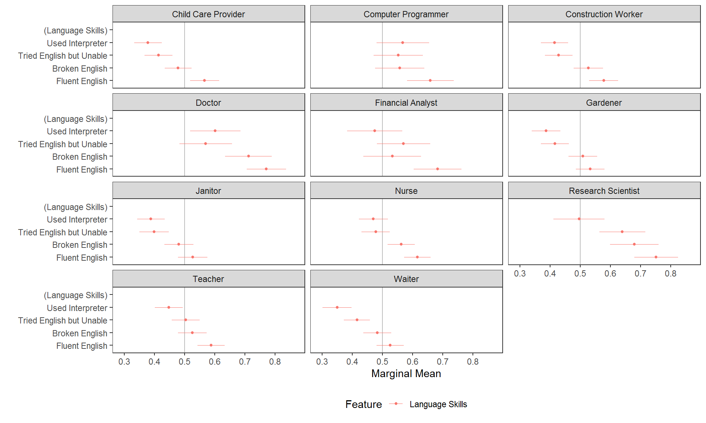
Alternatively, new interaction variables can be created using interaction() and then their AMCEs (with inferential caution) or MMs can be plotted like any other variable:
immigration$language_entry <- interaction(immigration$LanguageSkills, immigration$PriorEntry, sep = "_")
# average component interaction effects
acies <- amce(immigration, ChosenImmigrant ~ language_entry, id = ~CaseID)
plot(acies)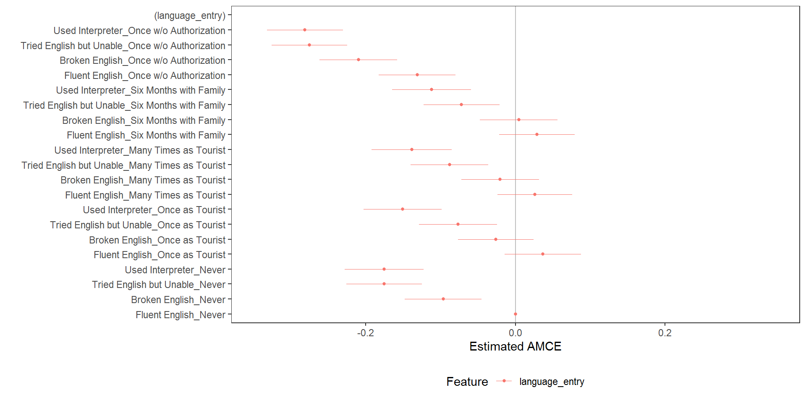
# higher order MMs
interaction_mms <- mm(immigration, ChosenImmigrant ~ language_entry, id = ~CaseID)
plot(interaction_mms, vline = 0.5)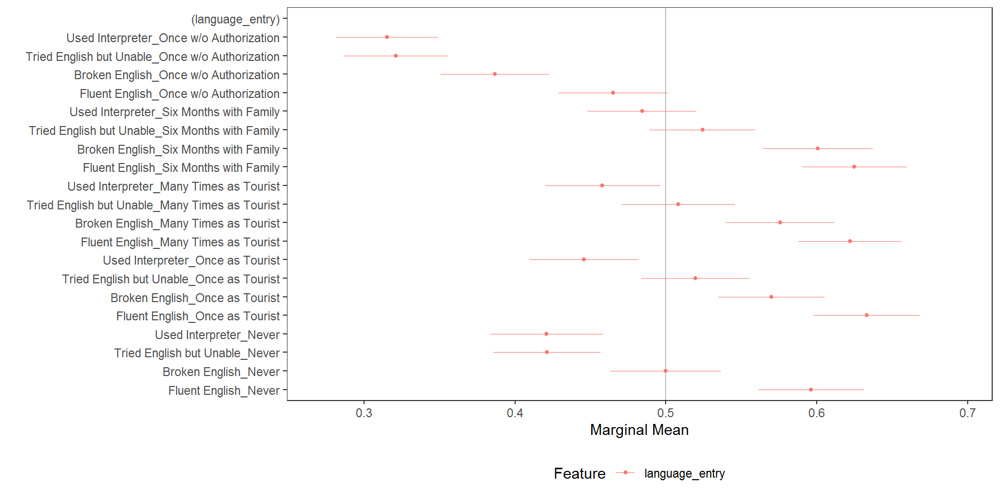
The package provides a number of useful diagnostic functions.
For example, to check display frequencies of conjoint features (to ensure equal - or unequal - display frequency):
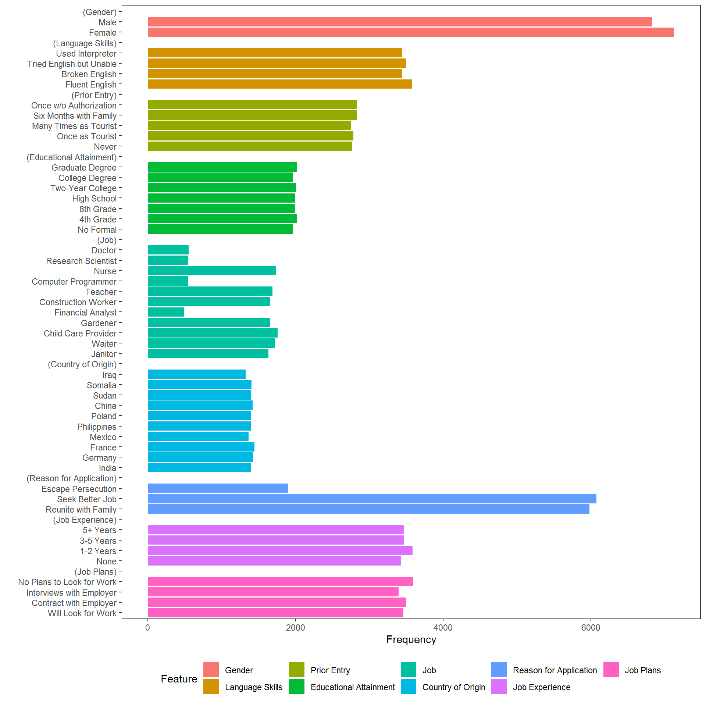
As is clear in the above, constraints were imposed in the original study on the allowed combinations of Job and Education and also on combinations of CountryOfOrigin and ReasonForApplication. The cj_props() function provides tidy proportions tables to verify that the design was implemented as intended or to perform further subgroup analyses.
Job Education Proportion
5 Financial Analyst No Formal 0
8 Computer Programmer No Formal 0
10 Research Scientist No Formal 0
11 Doctor No Formal 0
16 Financial Analyst 4th Grade 0
19 Computer Programmer 4th Grade 0
21 Research Scientist 4th Grade 0
22 Doctor 4th Grade 0
27 Financial Analyst 8th Grade 0
30 Computer Programmer 8th Grade 0
32 Research Scientist 8th Grade 0
33 Doctor 8th Grade 0
38 Financial Analyst High School 0
41 Computer Programmer High School 0
43 Research Scientist High School 0
44 Doctor High School 0subset(cj_props(immigration, ~CountryOfOrigin + ReasonForApplication, id = ~CaseID), Proportion == 0) CountryOfOrigin ReasonForApplication Proportion
21 India Escape Persecution 0
22 Germany Escape Persecution 0
23 France Escape Persecution 0
24 Mexico Escape Persecution 0
25 Philippines Escape Persecution 0
26 Poland Escape Persecution 0The main amce() and mm() functions can also be used for balance testing. Rather than comparing outcomes across feature levels, we will compare a covariate across feature levels. Both approaches will give a similar result:
plot(mm(immigration, ethnocentrism ~ Job + Education + CountryOfOrigin + ReasonForApplication, id = ~CaseID), xlim = c(10,
30), vline = mean(immigration$ethnocentrism, na.rm = TRUE))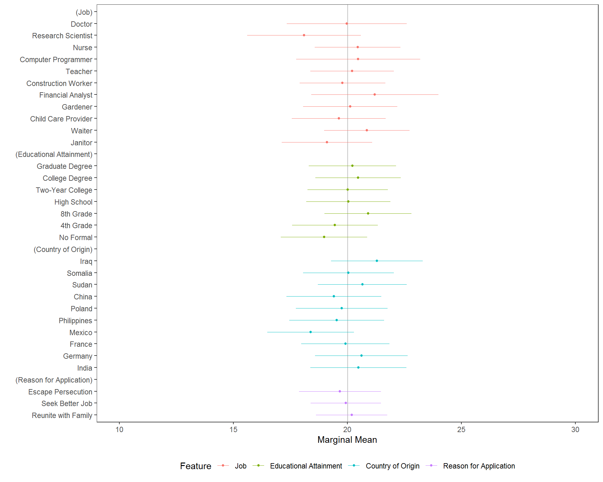 Given that confidence intervals for each feature hover closely around the grand mean, there is little reason to believe that imbalance is a problem. The same analysis could be performed using amce() or, of course, cj() with either estimand specified in estimate =.
Subgroup diagnostics can be used to evaluate whether there is, for example, any preference for the left-hand or right-hand profile (in a two-profile design):
plot(cj(immigration, f1, id = ~CaseID, by = ~profile, estimate = "mm"), group = "profile", vline = 0.5)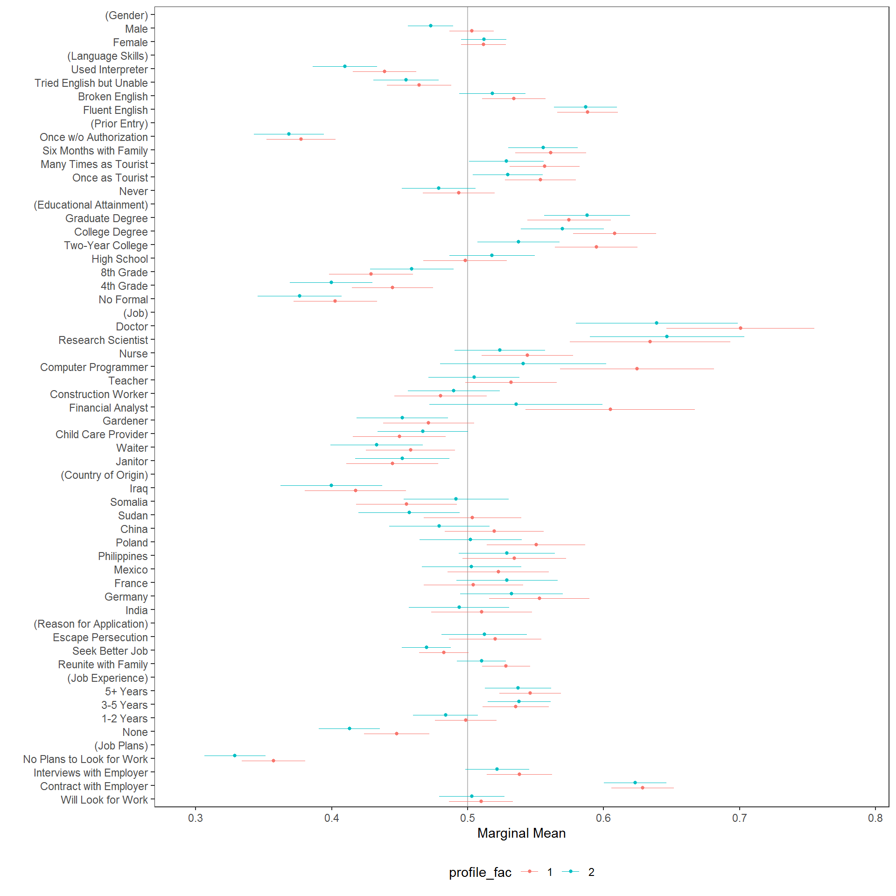
Again, in this example there are no obvious concerns generated from the diagnostic. The same approach can be used to perform other diagnostics, such as detecting carryover problems.